Pleasure Gardens Walk
Best car park: The Stables Visitor Centre
Hylands Estate is proud to have approximately 574 acres of restored historic parkland open to the public free of charge.
Honest ratings, so you can decide in seconds whether it suits your dog.
How we rate this
How we rate this
How we rate this
How we rate this
How we rate this
How we rate this
How we rate this
How we rate this
See what it actually looks like before you go.

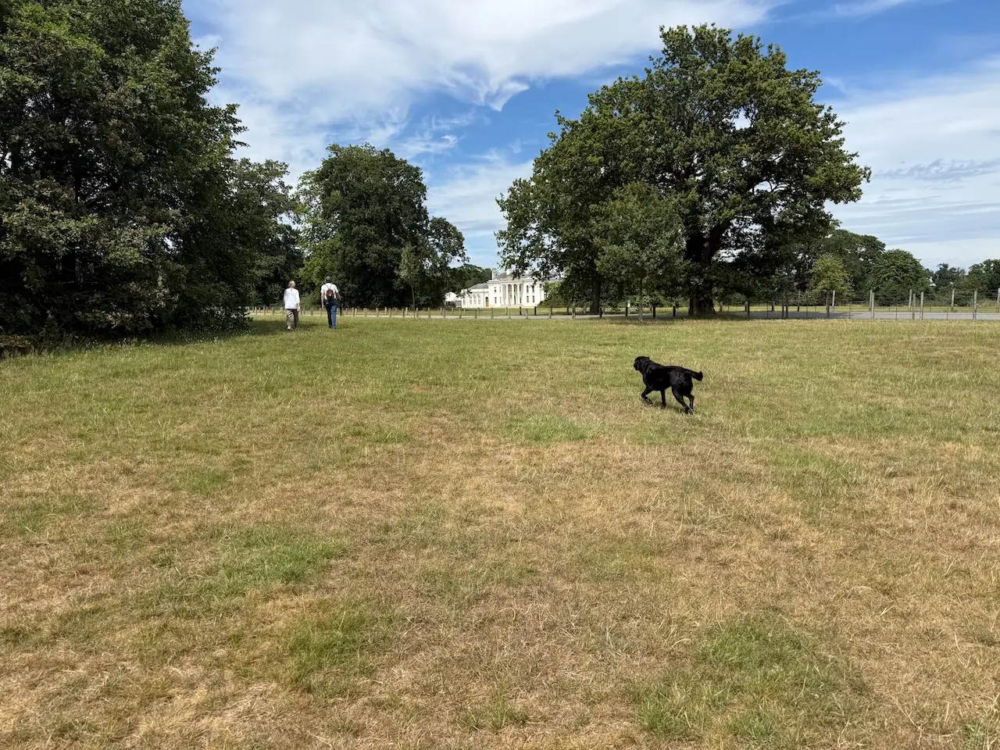
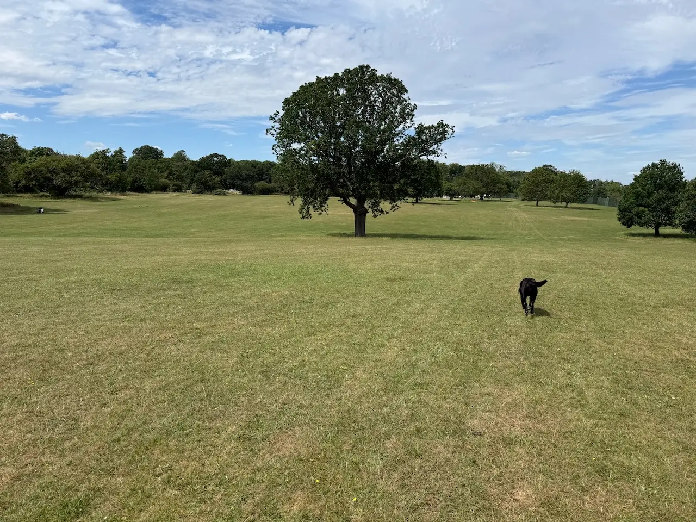
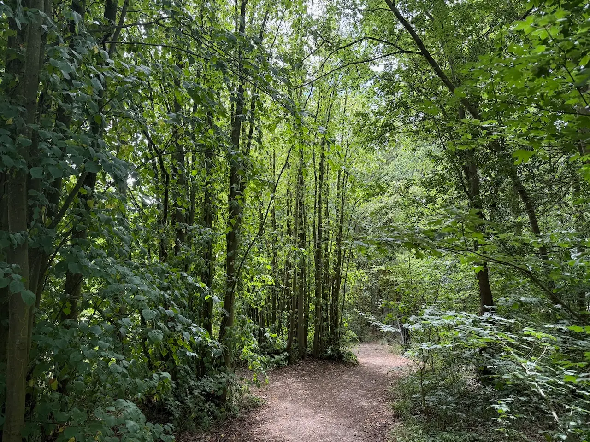
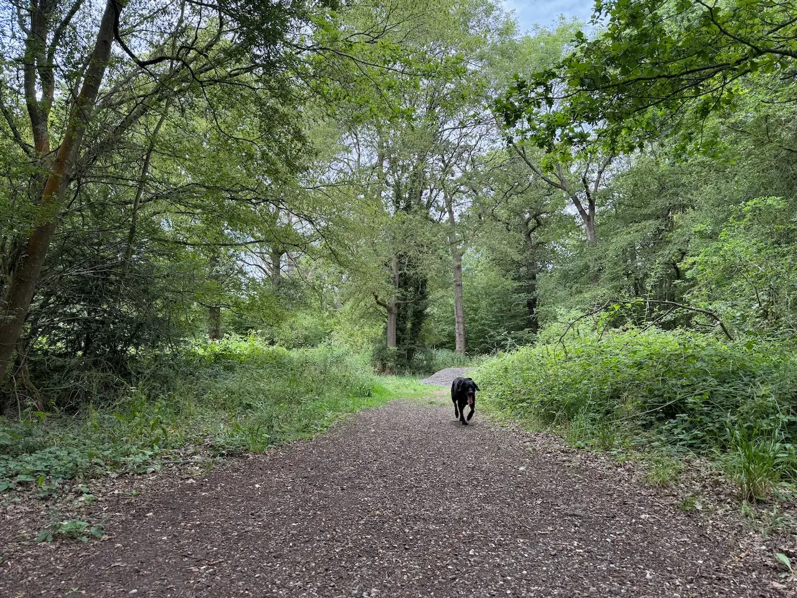
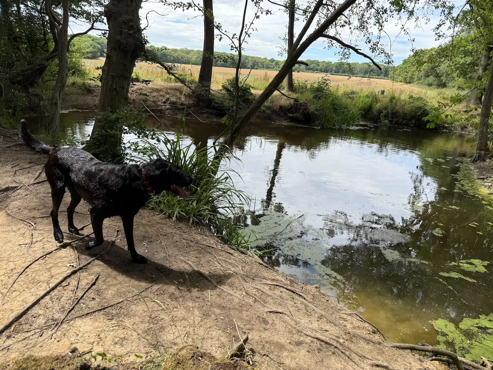
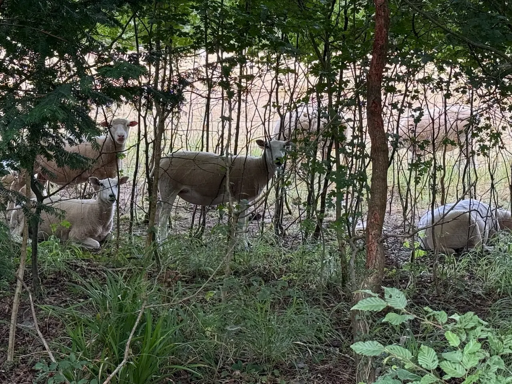
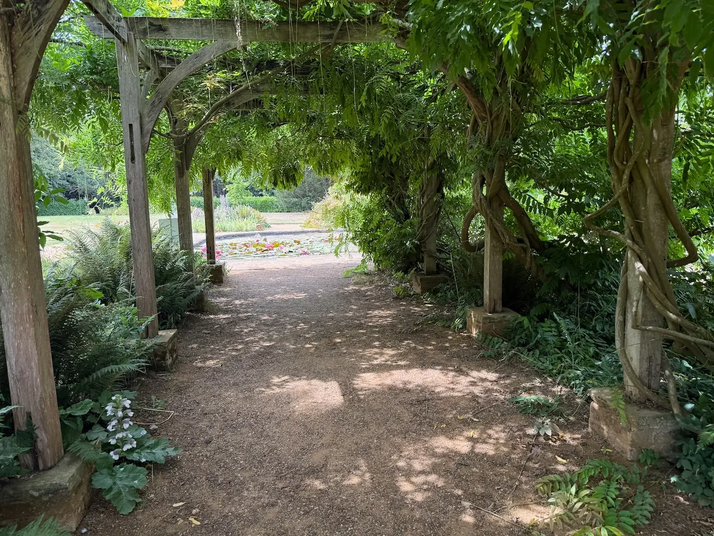
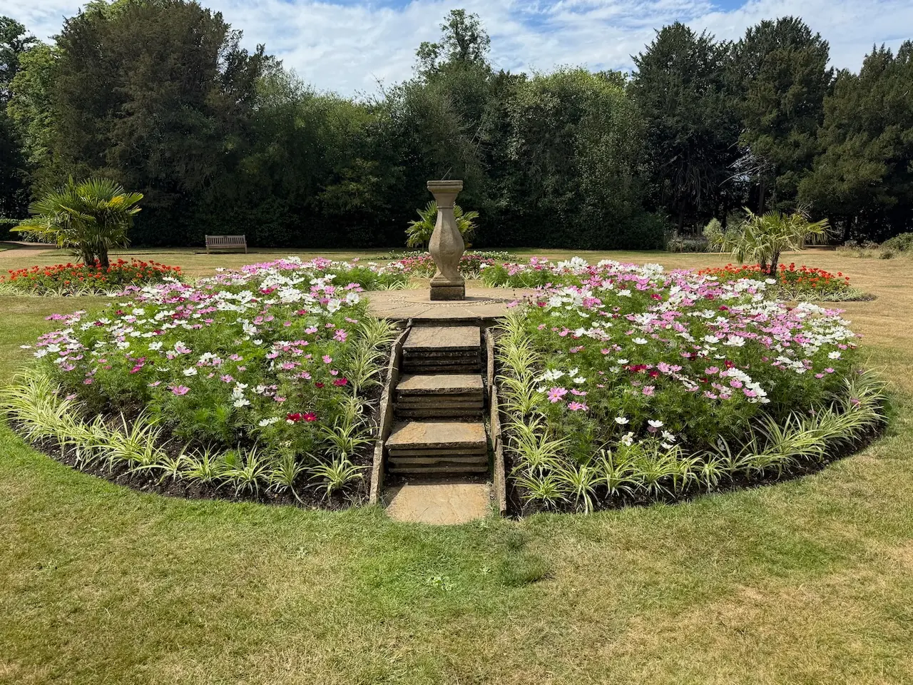
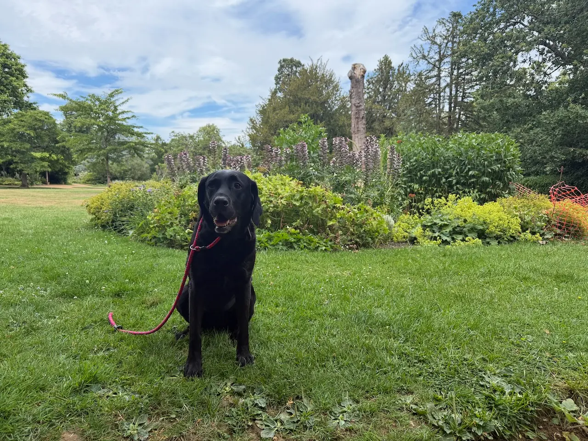
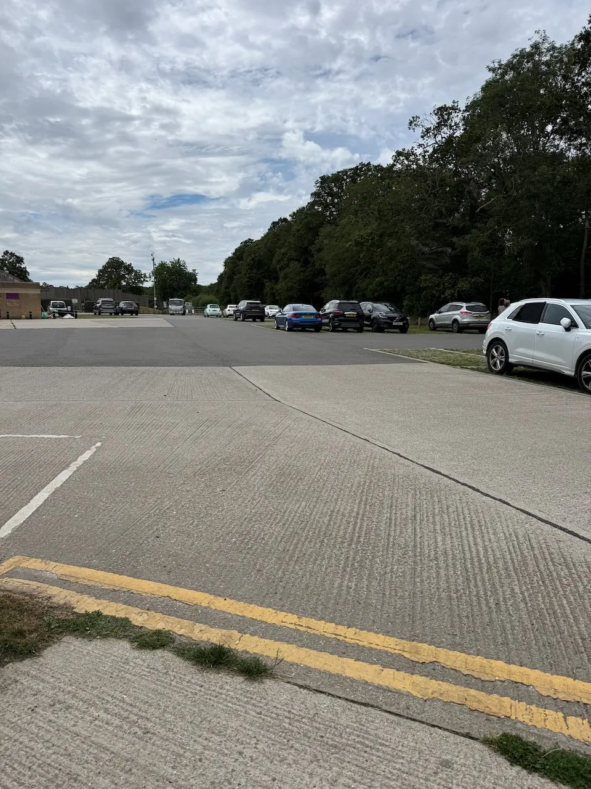
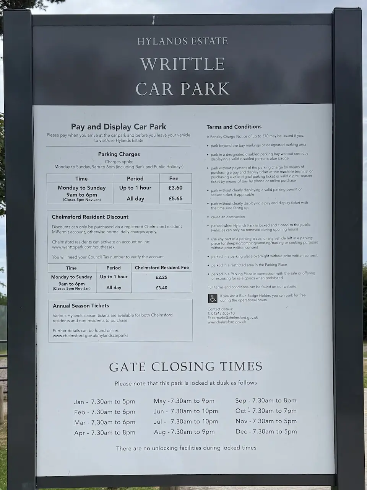
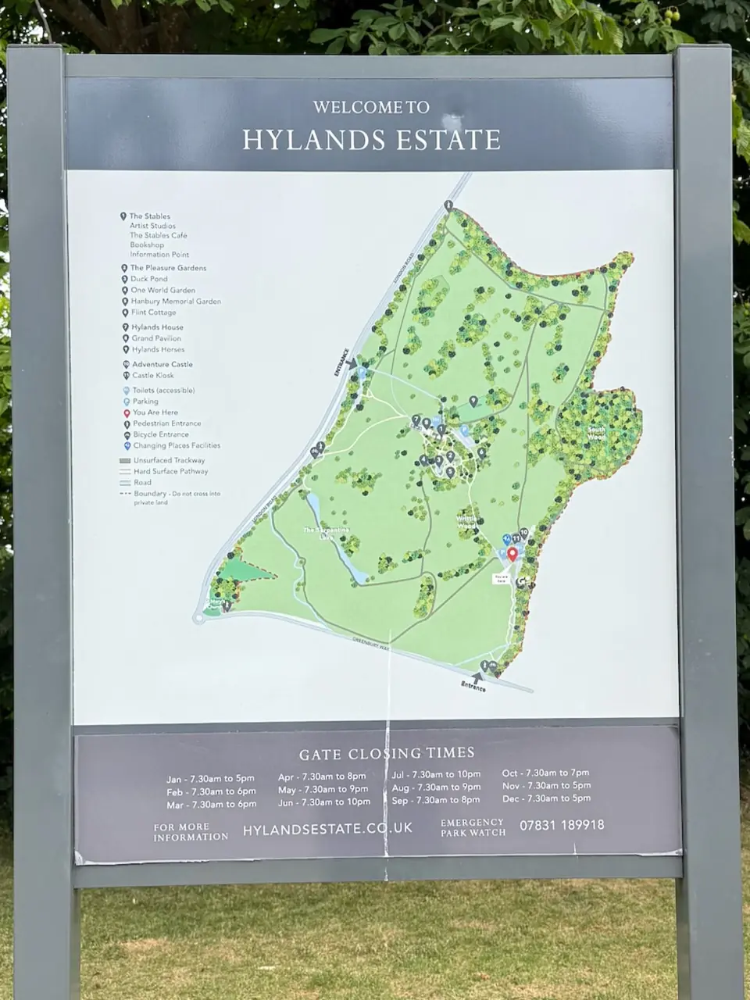
Best car park: The Stables Visitor Centre
Best car park: London Road Car Park
Best car park: Writtle Car Park
Best car park: London Road Car Park
Parking & directions. There are three main parking areas spread across the estate's two entrance zones. Parking charges apply daily from 9:00 AM to 6:00 PM (including weekends and bank holidays) across all car parks at Hylands Estate. Gates open at 7:30 AM.
Closest parking for Hylands House, The Stables, The Deli café and the Pleasure Gardens.
★ RecommendedLargest car park, ideal for the Adventure Playground, Go Ape and the western side of the estate.
A quieter option with good access to Hylands House and the surrounding parkland.
Click a car park above to open it in Google Maps
Hylands Estate is free to visit, although parking charges apply between 9am and 6pm.
We've suggested five routes to help you get started, but there are plenty of other paths to explore throughout the estate.
There are several designated on-lead areas, so please look out for the signs and keep your dog on a lead where required.
Already heading to Writtle? Here's what other local dog owners pair with this walk.
Other dog-friendly walks within easy reach of Hylands Park.
From local dog owners who've walked it.
★ This walk doesn't have any community tips yet.
Know something that would help another dog owner?
Have you spotted something we've missed?
We'd love your help keeping Dogs of Essex accurate and up to date.
Managed by Hylands Estate.